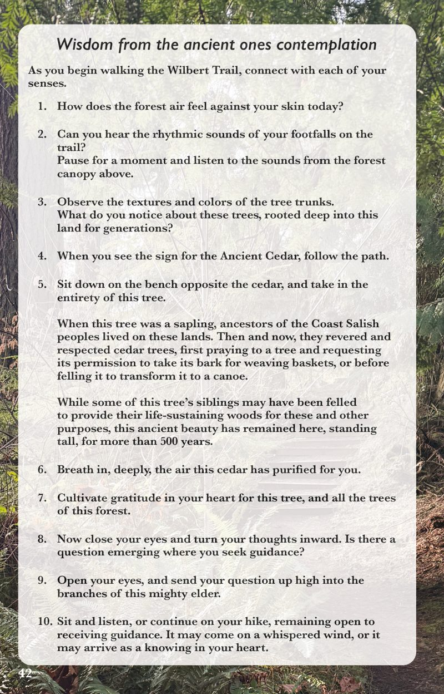

Healing Journeys on Whidbey Island
25 nature explorations to help you reflect and reconnect
About the book
Where picturesque shorelines meet fern-laden forests, Whidbey Island reveals pathways to deep restoration.
Healing Journeys on Whidbey Island offers meditations and mindful practices, inviting you to explore the island’s unique nature preserves and discover renewal in the quiet beauty that thrives here.
A portion of proceeds supports the non-profit organizations on Whidbey Island that steward public nature preserves.
- Format
- Softcover, 76 pages
- Price
- $28
- Publisher
- Sea Sanctuary Press
A look inside

Order online
Online ordering opens with the expanded second edition this November. Until then, find a copy at the shops listed here.
Find it on Whidbey
Pick up a copy at these local shops:
- Yoga studio nameTown
- Store nameTown
About Kate
Kate Conway Larson is a writer and nonprofit professional living on Whidbey Island, Washington. She weaves her background in yoga, mindfulness, and storytelling with her love for the outdoors to guide others toward connection and renewal in nature.